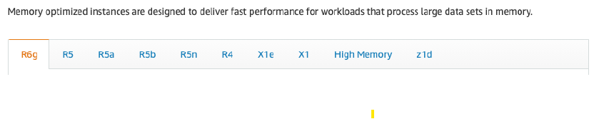

- EC2_01: https://chatgpt.com/c/7ddee1bf-7240-4789-913a-72dae8438d00
- EC2_02 : https://chatgpt.com/c/636011e3-1ce6-4268-8089-47ca3b12c9b9
EC2 / ECC (elastic compute cloud)¶
1. Intro¶
- IaaS
- connect from terminal (instance must have public IP)
- SSH (OS : linux,mac,W10+)
- generate SSH key-Pair
- Putty ( OS: W7,8,9)
- EC2 instance Connect (Amazon Linux 2) - browser session.
- aws cli installed in ec2 - run any commnd, provided IAM permission added on ec2-role - don't run "aws configure" - get Instance metadata
- http://169.254.169.254/latest/meta-data/
 (169.254)
(169.254) - instance ID,
- public IP, private IP, elastic IP, etc
- ...
-
Retrieve runtime information dynamically
-
AMI
- ami accidental deledte --> goes to recycle bin
- AMIs are bound to the Region they are created in.
- So, you need to copy the AMI across Regions for disaster recovery readiness.
- When the new EBS-backed AMI is copied from Region A into Region B,
- no charges for copying an AMI.However, standard storage and data transfer rates apply.
- it automatically creates a snapshot (root volumee) in Region B because AMIs are based on the underlying snapshots
- Region B will have :
- 1 AMI
- 1 snapshot (root + additional optional EBS vol)
- https://docs.aws.amazon.com/AWSEC2/latest/UserGuide/CopyingAMIs.html
t2.micro 1 1 EBS-Only Low to Moderate
t2.xlarge 4 16 EBS-Only Moderate
c5d.4xlarge 16 32 1 x 400 NVMe SSD Up to 10 Gbps
r5.16xlarge 64 512 EBS Only 20 Gbps
m5.8xlarge 32 128 EBS Only 10 Gbps
 - container for a role that can be attached to an Amazon EC2 instance when launched
- contain only one role, and that limit cannot be increased
- container for a role that can be attached to an Amazon EC2 instance when launched
- contain only one role, and that limit cannot be increased
2. ec2: Instance type (family,gen,size) :yellow_circle:¶
- https://ec2instances.github.io/
- https://instances.vantage.sh/

general purpose :¶
- balanced,
- eg: t2.micro

compute optimized,¶
- gaming server, media, batch, ML, HPC

memory optimized¶
- real-time system, large dataset processing, BI
- 
storage optimized¶
- File System, RDBMS, data-ware house, cache server, OLTP etc

3. Purchase options :yellow_circle:¶
3.1 On-Demand¶
- No long-term commitment
- no upfront payment
- Flexible
- use case: short workload
- pay by
- second (after the first minute) (Window and Linux)
- hour (other OS)
Capacity Reservations¶
- Reserve On-Demand instances capacity in a specific AZ for any duration
3.2 Reserved¶
- 1 & 3 years
- fixed : InstanceType, scope:Region/AZ, Tenancy, OS
- up to 72% discount
- Payment Options – No Upfront (+), Partial Upfront (++), All Upfront (+++)
- use case:
- long workloads
- steady-state usage applications
Convertible Reserved¶
- upto 66% discount
- flexible : Instance Type, scope:Region/AZ, Tenancy, OS
- use case: long workloads with flexible instances types
3.3 Savings Plans¶
- (1 & 3 years)
- commitment to an amount of usage.
- Usage beyond EC2 Savings Plans is billed at the On-Demand price
- fixed : instance family & AWS region
- Flexible : Instance Size, OS, Tenancy
3.4 Spot Instances¶
- upto 90% discount + MOST cost-efficient
- can lose instances (less reliable),
- When we cancel an active spot request, it does not terminate the associated instance
2 mingrace period.- use case:
- Not suitable for critical jobs or databases
- workloads that are resilient to failure : Batch jobs, Data Analysis, Image processing, etc
- type:
- one time
- if interrupted then terminated.
- persistent
- has to terminate instance manually
- has to terminate instance manually
-
provision : define launch pool
launch pool : duration/expiry <<< type: one-time/persistent count instance Types cpu (min.max) - define **our max spot price** , else od-price if max spot price < current Spot price then use it if max spot price > current Spot price then stop/terminate instance with 2 min grace -
terminate:

3.4.1 Spot fleet¶
- collection of Spot Instances (and optionally On-Demand Instances)
- on-time Instances only
- define multiple launch pool
- thus request various instance types
- provides higher availability and fault tolerance
- if spot instance is termninated, it will match with another spot instance
- if none found then OD
-
thus maintain target capacity
-
strategies:

lowestPrice:- from the pool with the lowest price
- (cost optimization, short workload)
diversified:- distributed across all pools
- (great for availability, long workloads)
capacityOptimized:- pool with the optimal capacity for the number of instances
priceCapacityOptimized(recommended):- pools with highest capacity available,
- then selectthe pool with the lowest price (best choice for most workloads)
3.4.1 Spot block (deprecated)  ¶
¶
- Spot Blocks are priced at the same rate as Spot Instances
- but with the added benefit of no interruptions for the block duration (
1-6 hr)
3.6. Dedicated Instances¶
- underlying h/w not shared with other account.
- May share hardware with other instances in same account
3.7 Dedicated Hosts¶
- most expensive $$
- book an entire physical server/racks/building.
- for companies that have strong regulatory or compliance needs
- control over instance placement
- pay by :
- physical cores
- underlying network socket visibility.
- Purchasing Options
- On-demand – pay per second for active Dedicated Host
- Reserved - 1 or 3 years (No Upfront, Partial Upfront, All Upfront)
summary¶
 ¶
¶
4. hibernate¶
- RAM state ( <
150 GB), gets preserved in - EBS root volume
- with/without Encryption
- hence boot up fast.
- supported family instances : C3, C4, C5, I3, M3, M4, R3, R4, T2, T3, …
C**M**T**- max for
60 days - Also, Root Volume – must be EBS, encrypted.
#1
A Machine Learning research group uses a proprietary computer vision application hosted on an Amazon EC2 instance.
Every time the instance needs to be stopped and started again, the application takes about 3 minutes to start
as some auxiliary software programs need to be executed so that the application can function.
The research group would like to minimize the application boostrap time whenever
the system needs to be stopped and then started at a later point in time.
As a solutions architect, which of the following solutions would you recommend for this use-case?
- Create an Amazon Machine Image (AMI) and launch your Amazon EC2 instances from that
- Use Amazon EC2 Instance Hibernate **
¶
#1
A Machine Learning research group uses a proprietary computer vision application hosted on an Amazon EC2 instance.
Every time the instance needs to be stopped and started again, the application takes about 3 minutes to start
as some auxiliary software programs need to be executed so that the application can function.
The research group would like to minimize the application boostrap time whenever
the system needs to be stopped and then started at a later point in time.
As a solutions architect, which of the following solutions would you recommend for this use-case?
- Create an Amazon Machine Image (AMI) and launch your Amazon EC2 instances from that
- Use Amazon EC2 Instance Hibernate **
5. Placement group :yellow_circle:¶
- cluster
- low-latency group in a single AZ
- close-proximity.
- hence high n/w throughput
- usecase : HCP
-

-
spread
- spreads instances across underlying hardware in mutli-AZ
- max :
7 instance/group/AZ -

-
partition
- partition-1 in AZ-1
- partition-2 in AZ-1
- ...
- partition-3 in AZ-2
- ...
- max /restriction
100 instances/group7 partitions/AZ
- use case: hadoop, kafka, casandra

6. provision instance :yellow_circle:¶
- Tenancy
- host / physical building and racks
- Dedicated / single-tenant (single aws account)
- default/shared/multi-tenant (multiple aws account, shares same hardware)
- change tenancy:
- ```
dedicated <==> host : can change
cannot change any other, fixed once
---
some rules to remember:
- VPC tenancy take precidence over ASG's LT's tenancy
- host > dedicated > default : cannot downgrade. ```
- OS / AMI
- can create AMI on ec2-i.
- OS boot volume :
gp* / io* - memory/RAM
- cpu architecture
ARMAMD- user-data script
- bootstrap script - automate boot tasks
- install update
- install software
- ...
- run only once (first launch by-default)
- can change to run everytime instance restarted
- can change to run everytime instance restarted
-
run with root user permission.
-
Storage
- 02_storage
- Network-attached (EBS & EFS)
-
hardware (EC2 Instance Store)
-
Network :
- 04_network
- ENI 00_eni+sg.md
-
sg: 00_eni+sg.md
-
Elastic load Balancer 01_ELB.md
- Auto Scaling group 01_ASG.md
7. Save cost ¶
AWS Cost Explorer¶
- helps you identify under-utilized Amazon EC2 instances.
- that may be downsized on an instance by instance basis within the same instance family,
- understand the potential impact on your AWS bill by taking these purchace option:
- Reserved Instances
- Savings Planss
AWS Compute Optimizer¶
- recommends optimal AWS Compute resources for your workloads
- to reduce
costsand improveperformanceby using machine learning- to analyze historical utilization metrics.
- helps you choose the optimal Amazon EC2 instance types.